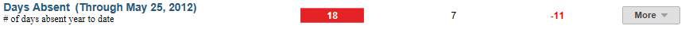
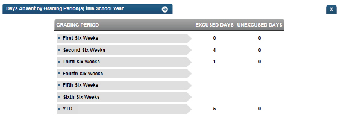

Dashboard Metrics


Days Absent
Background
Student Dashboard Metrics
Because of the value of attendance as a key leading indicator of student performance, virtually every performance management dashboard should include a measure of student attendance. This need was echoed in focus groups conducted with educators, in which attendance was consistently named as one of the top three student data needs.
Primary Metric
- Days Absent: the total number of days a student has been absent year to date.
Related Metric
- Class Period Absence Rate: the percent of class periods a student is in attendance during the last four weeks, last eight weeks and the entire year to date, with comparison to campus goals for each.
- Daily Attendance Rate: the percent of days a student is in attendance during the last four weeks, last eight weeks and the entire year to date, with comparison to campus goals for each.
User Interface
Dashboard Example
Figure 1 shows the Days Absent metric as seen on the student dashboard.

Figure 1 Ed-Fi Days Absent Metric
Status Definition
The Status Indicator is determined by campus-specific thresholds (campus goals) which are set at the district level. The Ed-Fi default attendance threshold is 8 days absent.
Table 2 lists the status indicators and trend comparisons as seen on the student dashboard.
Metric Indicator | Trend Comparisons | |||
Metric Name | Metric Status Indicator | Compares: | To: | |
Days Absent | Year to Date | Green (Numeral) = if Days Absent is less than or equal to campus goal Red (Percentage) = if Days Absent is greater than campus goal | Prior school year | Current School Year |
(a) The Value column displays the total number of days the student is absent.
Trend Definition
Table 3 lists the trend indicators for the Daily Attendance Rate metric.
Trend Indicators: Objective is to indicate Daily Attendance Rate | |||
| Up green | If the value for the current time frame is more than 5% higher than the prior time frame. | |
| Unchanged | If the value for the current time frame is less than or equal to 5% higher or less than or equal to 5% points lower. | |
Down red | If the value for the current time frame is more than 5% lower than the prior time frame. | ||
The trend does not display for the first occurrence of a time frame since data is not available.
Periodicity
Best practice is to load the data for this metric daily.
Recommended Load Characteristics | |
| Calendar | Throughout the school year |
| Frequency of data load | Daily, Weekly, Monthly |
| Latency | 4 weeks |
| Interchange schema | Interchange-StudentAttendance.xsd |
Tooltips
The standard tool tips for the metric definition, column headers, and help functions display for this metric.
The following are tooltips specific to the Daily Attendance Rate metric:
 is ‘No change from the prior period'
is ‘No change from the prior period'- is ‘Getting worse from the prior period'
 is ‘Getting better from the prior period'
is ‘Getting better from the prior period'
Business Rules
The number of days absent is a simple calculation of the number of absences a student has year to date. The status bar will display either low if the student has 7 or fewer absences year to date or high if the student has eight or more absences year to date. The value column will display the total number of absences year to date.
The drilldown – titled ‘Metric Detail’ - should display the attendance details as seen below. A tooltip option is available to see the # of absences in each category:
An historical drilldown will be available to see this year’s value as compared to prior years.
The classroom view will also need this metric value as an option when the user clicks add/delete metrics. It should display in the Attendance section of the classroom view for the General Overview.
Items to be addressed when applicable:
- Attendance should be calculated at the student level
Calculated Values
Days absent is a simple count of the days absent year to date.
| Calculated Values |
| Days absent = the number of days not in attendance for the current school year |
Data Anomalies
Data Anomalies
- Currently there is no way to account for students who withdraw and re-enroll. The attendance metrics account for attendance from the most recent enrollment date. Detail views will show a more complete history.
- The denominator for attendance metrics is not dynamic. If a student enters school later than the first day, he is considered present for the entire time he missed.
- Early education and Pre-kindergarten students that have attendance data will be included in the days absent campus rollup; the denominator of included students may be larger than average daily attendance on campuses with these students.
- The days absent drilldown will only show the breakdown of days absent for grading periods that have ended. Thus the year to date number may be slightly higher than the total of the absences in the grading periods if the student has been absent in the current grading period. The year to date number will be the most current number and is updated with nightly loads.
Footnotes
Footnotes are used to provide addition data information concerning the metric. Footnotes are sequential for the entire page. Therefore, a metric's footnote may not begin with the number 1.
The following footnotes appear below the metric:
- Best practice is to footnote students transferring in that have not been present for a full time frame.
- Metrics are sensitive to when and how often the data is loaded.
- Late enrollees are likely to be missing tardy data.
Date of Refresh
Best practice is for the date of last data refresh to appear next the metric in the following format:
- (Through April 22, 2010)
Drill Downs
The student level will have one drill down. This view is a table that gives a breakdown of the unexcused and excused absences broken down by grading period. The current grading period is a running total of the days absent as of the last load of data. See the example below:

Ed-Fi Student Days Absent Drill Down